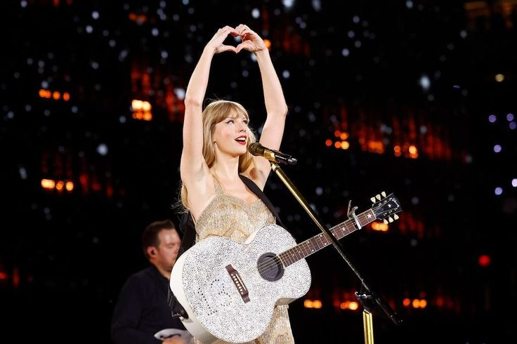

Durante toda su carrera los shows de Taylor Swift, especialmente su gira más reciente The Eras Tour,
fueron conocidos por ser mega espectáculos largos, teatrales y muy producidos.
Tiene la fama de ser una artista que lo da todo por la performance y la diversión del público.
"The Eras Tour" no es solo un show o un espectáculo. Tiene todo un concepto alrededor que permite
que los fans conecten con ella cada noche como un evento único en su vida.
El show recorre toda su carrera, y esta dividido en etapas según sus álbumes. Cada etapa tiene una estética diferente, cambiando
colores de representación, género, vestuarios y puesta escenográficas.
El show tiene una duración de tres horas y media, con más de 40 canciones en el setlist.
La experiencia incluye una producción que cuenta con:
Taylor Swift es una artista conocida por tener una relación muy estrecha con sus fans. Por esto el show incluye
momentos acústicos íntimos, canciones sorpresa "surprise songs" que cambian cada noche y son únicas en cada estadio,
además de mantener al público expectante, y momentos de intimidad con la audiencia.

Biografía Página de inicio Discografía de Taylor